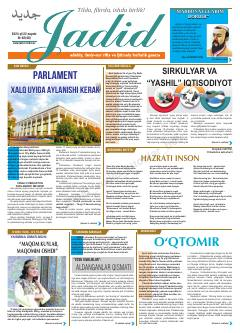

JG"Jadid" gazetasining 48-soni iqtisodiyot, siyosat va madaniyat mavzulariga bag'ishlangan.
"Jadid gazetasi" nashrining 48-sonida Oliy Majlis Qonunchilik palatasining faoliyati, sirkulyar iqtisodiyot va "yashil" iqtisodiyot tamoyillari, shuningdek, madaniy va tarixiy mavzulardagi qiziqarli maqolalar o'rin olgan. Gazeta sahifalarida O'zbekiston Prezidentining nutqlari va adabiy asarlar ham yoritilgan.